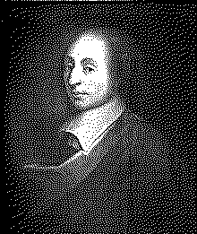

| годы жизни | 1623–1662 |
| страна | Франция |
| область | математика · физика · теология · философия |
| главное | треугольник Паскаля · теория вероятностей · давление · счётная машина |
| характер | вундеркинд · мистик · болезненный · умер в 39 лет |
Математик который верил в Бога и изобрёл вероятность.
в 12 лет сам доказал что сумма углов треугольника = 180°. отец прятал книги — не помогло.
Блез Паскаль в 12 лет самостоятельно доказал что сумма углов треугольника равна 180°. Отец — математик-любитель — спрятал от него книги чтобы не перегружать. Это не помогло.
В 16 лет — теорема о шестиугольнике вписанном в конику. «Теорема Паскаля». До сих пор в учебниках.
В 19 лет — первый механический калькулятор. «Паскалина»2. Умел складывать и вычитать. Паскаль построил около 50 машин. Ни одна не продалась достаточно хорошо.
В 1654 году — переписка с Ферма1. Шевалье де Мере — игрок и друг Паскаля — задал вопрос: как делить ставки если игра прервана? Семь писем. Из них выросла теория вероятностей.
Треугольник Паскаля — старше Паскаля. Китайцы знали его в XI веке. Персы — в XIII. Паскаль систематизировал и применил. Коэффициенты биномиального разложения. Комбинаторика. Вероятности.
В ноябре 1654 года — мистический опыт. Ночь огня3. Два часа религиозного экстаза. Паскаль зашил записку с описанием в куртку. Нашли после смерти. После этого — почти не занимался математикой. Богословие. Философия. «Мысли».
Пари Паскаля: если Бог есть и верю — бесконечный выигрыш. Если Бога нет и верю — конечная потеря. Ожидаемая полезность веры — бесконечна.
Пари Паскаля4 — философский аргумент: верить в Бога разумно даже при неопределённости. Первое применение теории ожидаемой полезности вне азартных игр.
Умер в 39 лет от рака желудка. Последние годы — сильная боль. Запретил врачам обезболивать себя — хотел страдать «как Христос». Это или мистика или мазохизм.
После Паскаля осталось: треугольник, теория вероятностей, давление (единица давления — паскаль), язык программирования. И «Мысли» — незаконченные афоризмы которые читают до сих пор.